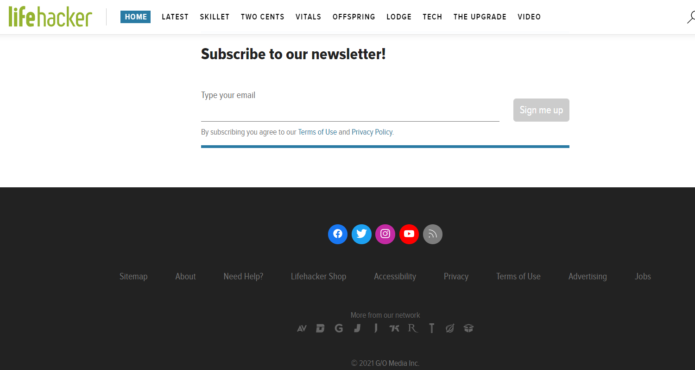
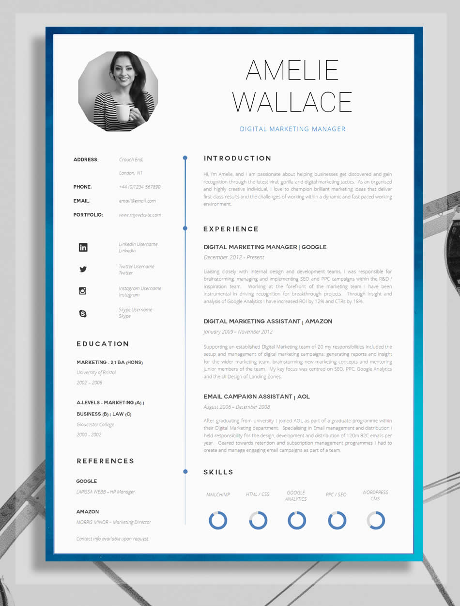
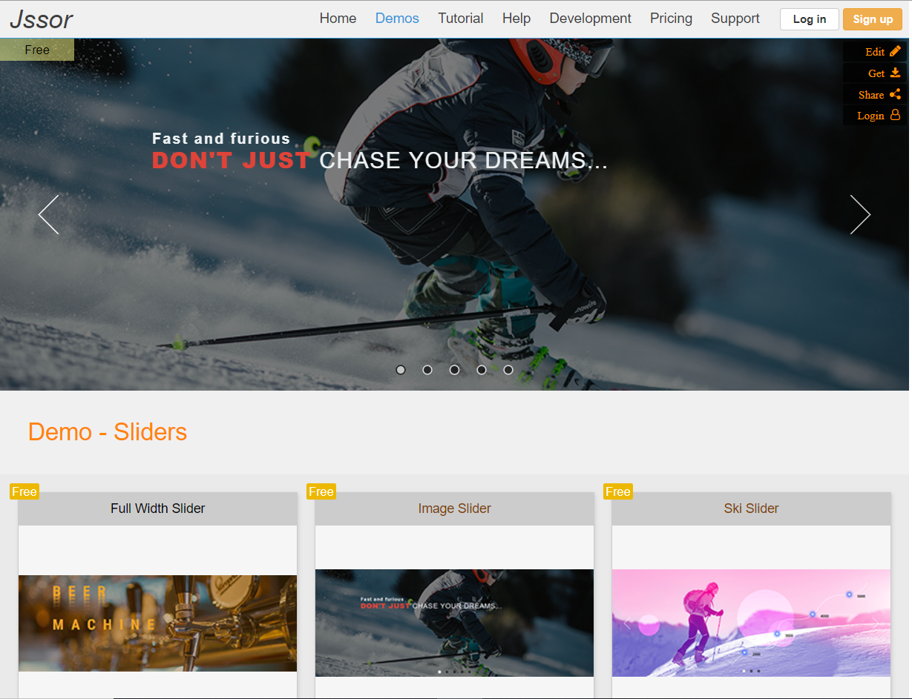

Are you willing to create webpages like mine?
Down below, is the research along with the link of the webpages.
Reference to Home Page |
The reference to the navagation bar was taken from the nav demo taught in workshop class.The footer was referred from life hacker website. The body was self made.
|
Reference to Resume Page |
Guru website was referred for resume page.Different information was taken to create an attractive page. Later the style of image and the about section were altered as per my choice.
|
Reference to Contact Page |
The Worldlink website was taken as a reference for the contact page. Different types of the text field was added to make the web page and a script code was used to make the page responsive.
|
Reference to Image Slider |
Jssor website was taken as a reference for image slider. The design of image slider was changed and made automatic. The images were changed along with their styles.
|
Reference to Blog Page
|
The popular blog Engadget was referred for the blog page. The trending section was taken from this webpage. Later the styles and images were altered in my favour.
|